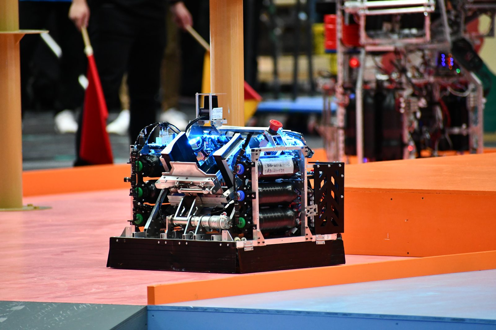
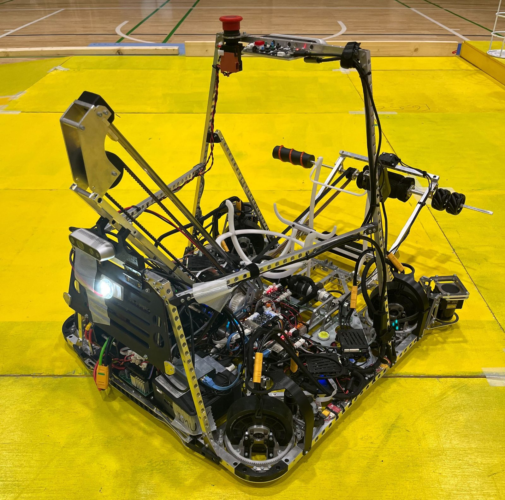

NHK学生ロボコン


概要
- 東工大ロボット技術研究会に所属しその中のNHKロボコンチーム「Maquinista」メンバーとして2023・2024年度のNHK学生ロボコンにそれぞれ出場。
- 2023年度は2機体が協力して落ちているリングを拾い、ポールに入れていくタスク
- 2024年度は2機体が協力して以下の3つのタスクを行う(1機体は全自動必須):
- 稲オブジェクトを特定の場所にプレイス
- ボールを拾い、射出してもう1機のエリアにパス
- 2色を判別して特定の1色のみを傘立てのようなオブジェクトに入れる(全自動ロボットのみが行える)
制作年
- 2023年度：2022年8月～2023年6月(大学2年生～大学3年生)
- 2024年度：2023年8月～2024年6月(大学3年生～大学4年生)
結果
- 2023年度：予選リーグ1勝1敗で予選敗退・特別賞 マブチモーター株式会社賞を受賞
- 2024年度：予選リーグ1勝1敗で予選敗退・特別賞 マブチモーター株式会社賞を受賞
チーム紹介
- 機械班と回路・制御班に分かれて活動
- 予算400万円
- 機械班15人、回路・制御班10人の合計25人
役割
2023年度：
- ステートマシンを用いたロボットの一連動作の制御
- 外乱オブザーバーを用いたローラー射出の回転数調整
- 大会チームリーダー(大会メンバーの統率を行いました)
2024年度：
- 最短時間移動の軌道生成プログラムを作成
- ROS2を使用した機体の目標速度指令を管理するノードの作成
- ビヘイビアツリーを用いたロボットの一連動作の制御
- プロジェクトリーダー(プロジェクト全体の運営を行いました)
キャチロボコンテスト

概要
キャチロボコンテスト第15回に出場しました。所定の位置にあるプチアソートをつかみ決まった場所に配置する競技
制作年
- 2025年6月～9月
結果
- 予選敗退はしましたがエキシビジョン出場と審査員特別賞を受賞しました
チーム紹介
- 機械と回路担当が1人で制御担当が1人でその他2人で合計4人
役割
- 5節リンクアームの制御
- 操縦用WebGUIの開発
- ROS2システムの構築
魔改造の夜

概要
- NHK総合のテレビ番組「魔改造の夜」の第9回に大学チーム『T工大』として出場
- 「魔改造の夜」とは大学や企業などがおもちゃや家電を魔改造して性能を競い合う番組
- ロボットを1回転させて数m離れたエリアにきれいに着地させてスコアを競うルール
制作年
- 2023年9月～10月
結果
- 優勝
チーム紹介
- 機械・回路・制御合わせて10人ほど
役割
- ESPを使用した一連動作の制御と速度制御
- フォトリフレクタを用いたジャンプのタイミングの試行錯誤